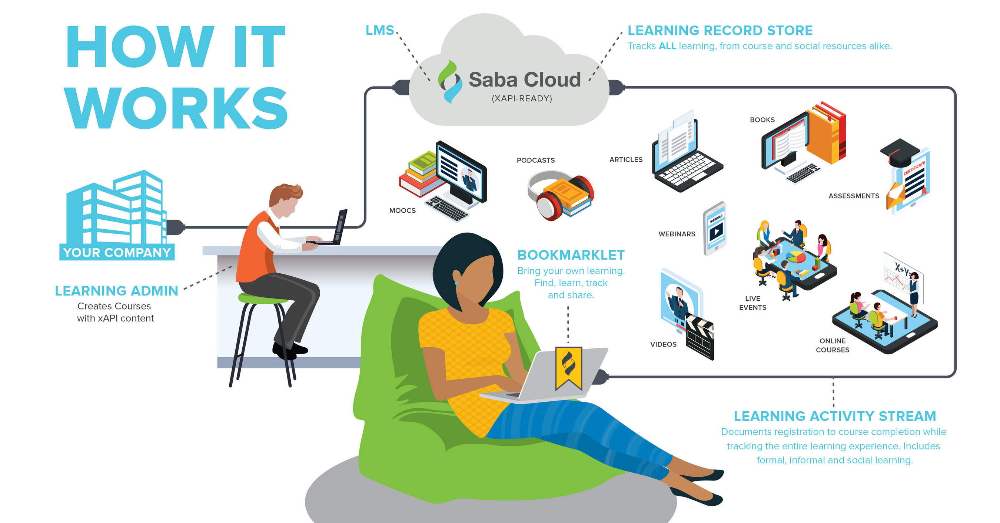
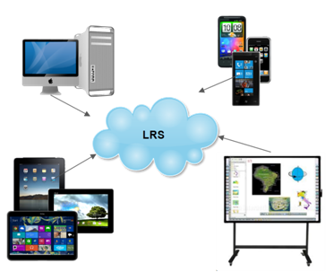

Программное обеспечение реализации модели электронного обучения с использованием API (xAPI) в электронном обучении привело к переходу от SCORM к LRS: к модели ЭО LRS
Software Rustici
Схема

Достоинства LRS
поддержка xAPI: создает записи в форме «я сделал это».
использование в рамках системы управления обучением (LMS) или самостоятельно
обмен данными обучения: данные обучения следуют за учеником, куда ученик перемещается
углубленная аналитика электронного обучения на основе большого количества учебных данных, которые они записывают и хранят
наличие дополнительных данных для отчета по сравнению с LMS
Недостатки LRS
нет встроенного механизма отчетности
администратор LRS (или администратор LMS, в которой существует LRS) должен предоставить средства для доступа к данным в LRS и создать систему отчетов для данных
Мобильное обучение

Источники информации
Безяев П. Новое старое в e-Learning. URL: http://i-elearning.ru/wordpress/tag/scorm
Видео-лекция: https://youtu.be/SJzTax_9S-c.
Tin Can API – замена устаревшему стандарту SCORM – часть 1. URL: https://habrahabr.ru/post/156067/
Источники информации - продолжение
Государев И. Б. О содержании понятий «мобильная информационная образовательная среда» и «мобильное обучение» в контексте обсуждения проектирования научно-образовательной среды вуза // Письма в Эмиссия. Оффлайн = The Emissia.Offline Letters: электронное научное издание (научно-педагогический интернет-журнал). – 2013. – http://www.emissia.org/offline/2013/2014.htm